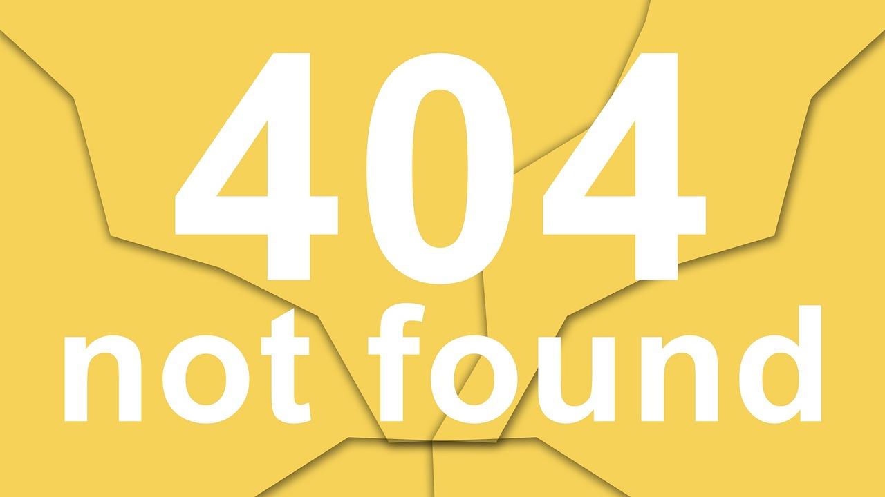

<ion-header [translucent]="true">
  <ion-toolbar>
    <ion-buttons slot="start">
      <ion-menu-button></ion-menu-button>
    </ion-buttons>
    <ion-title>Error 404</ion-title>
  </ion-toolbar>
</ion-header>

<ion-content [fullscreen]="true">
  <ion-header collapse="condense">
    <ion-toolbar>
      <ion-title size="large">Error 404</ion-title>
    </ion-toolbar>
  </ion-header>

  <div class="ion-padding">
    <h2>Está página não existe!! Use o menu para voltar a navega ou clique no botão abaixo.</h2>
    <ion-button routerLink="/home">Voltar ao Ínicio</ion-button>
    
  </div>
</ion-content>
